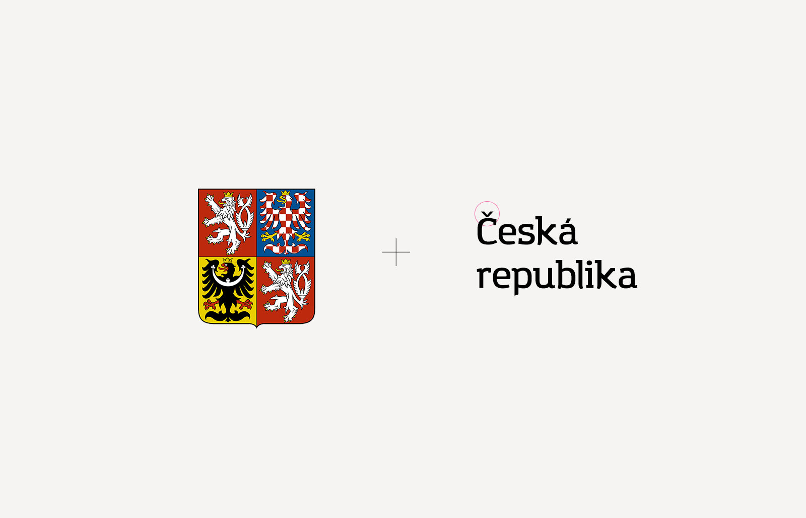

7 февраля 2015
Логотип для
Настоящих чешčких люстр
Логотип с изюминкой — текстовое начертание с использованием характерного для чешского алфавита «č с гачеком».
Чуть позже было решено добавить упрощенный герб Чехии.
Строго и со вкусомГачек (чеш. háček — крючок) — диакритический знак, проставляемый в латинице над некоторыми буквами для придания им нового звукового значения.
Источник — Википедия.

Самая первая версия — č не в самом удачном месте.Исправлено по совету Сергея Логвина.
 Дополнительный — горизонтальный вариант
Дополнительный — горизонтальный вариант

ООО «Настоящие чешские люстры»
Дизайнер Саша Карачинский максимально точно уловил и визуализировал концепцию нашей продукции, а также подготовил существенные предложения по формату её позиционирования на рынке.
Саша Карачинский зарекомендовал себя как клиентоориентированный, всесторонне образованный дизайнер, готовый ответственно выполнить поставленные задачи в обозначенные сроки.